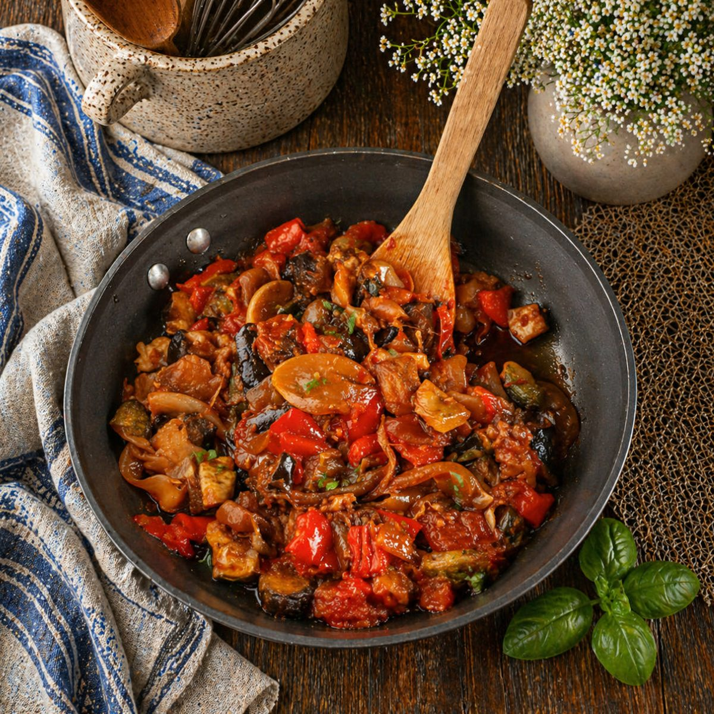
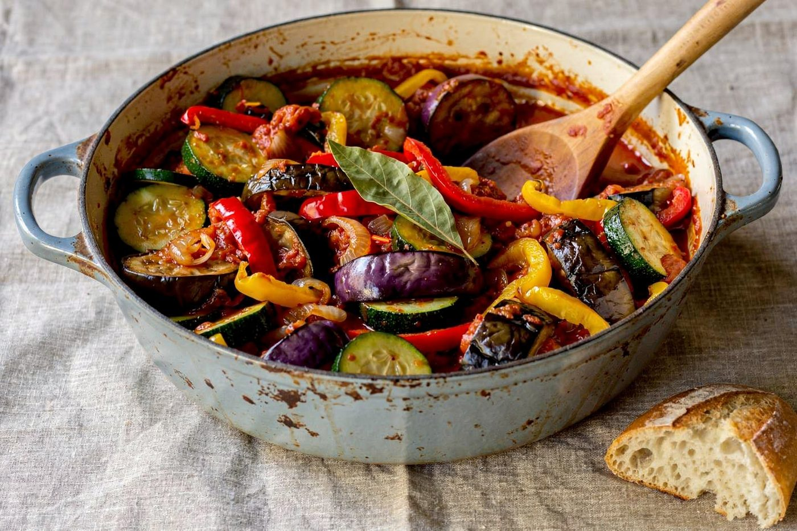
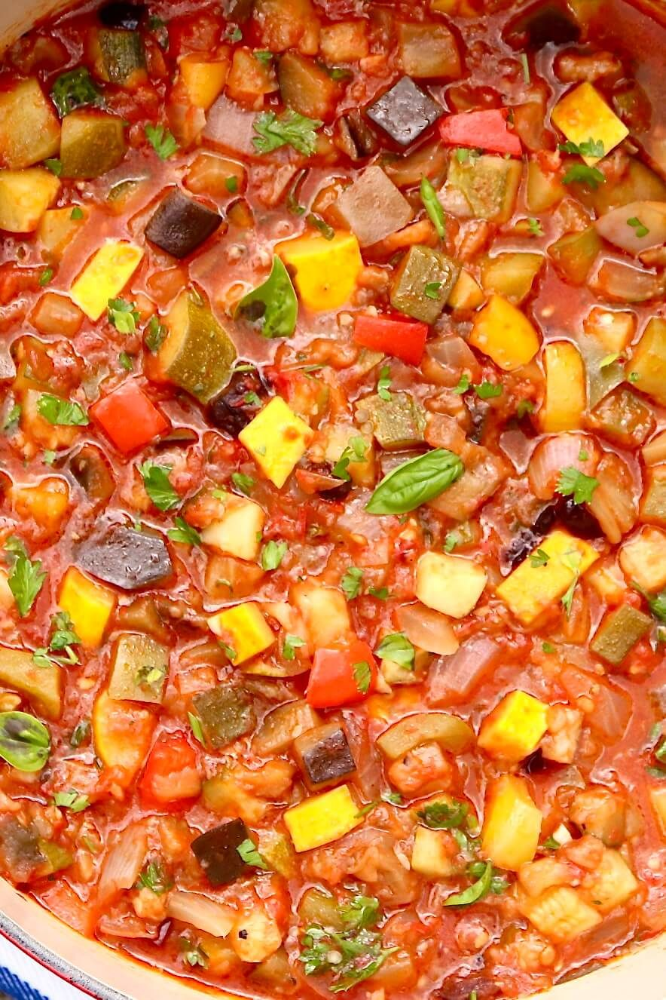
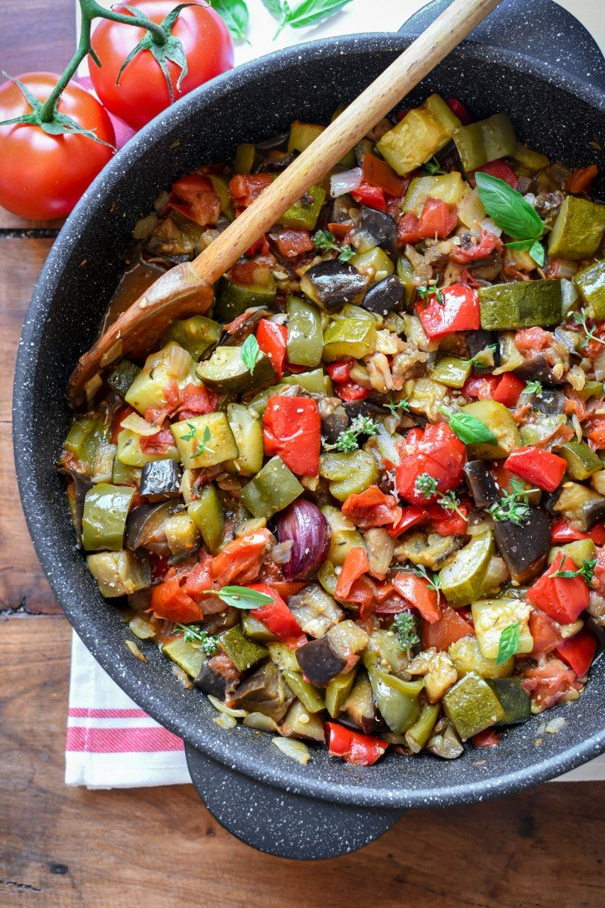
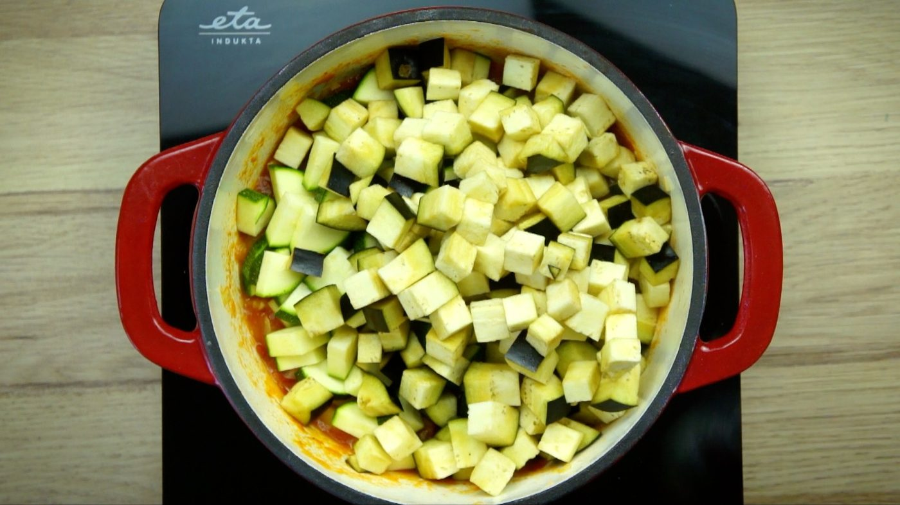
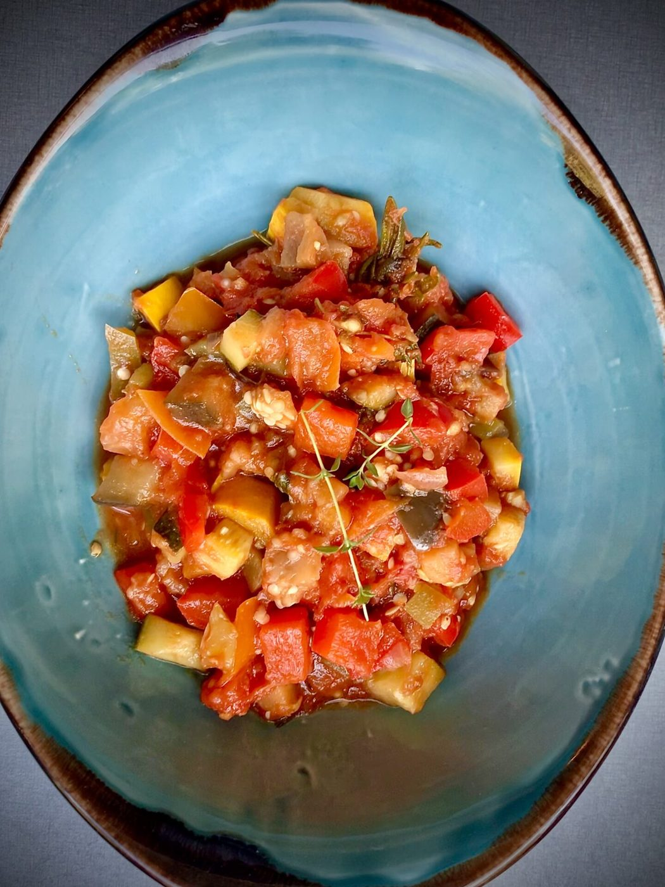
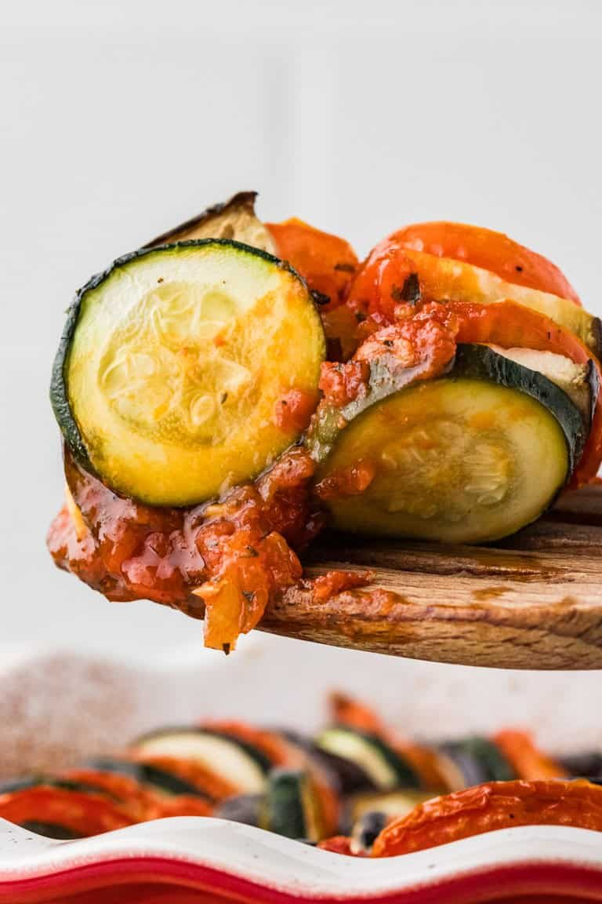
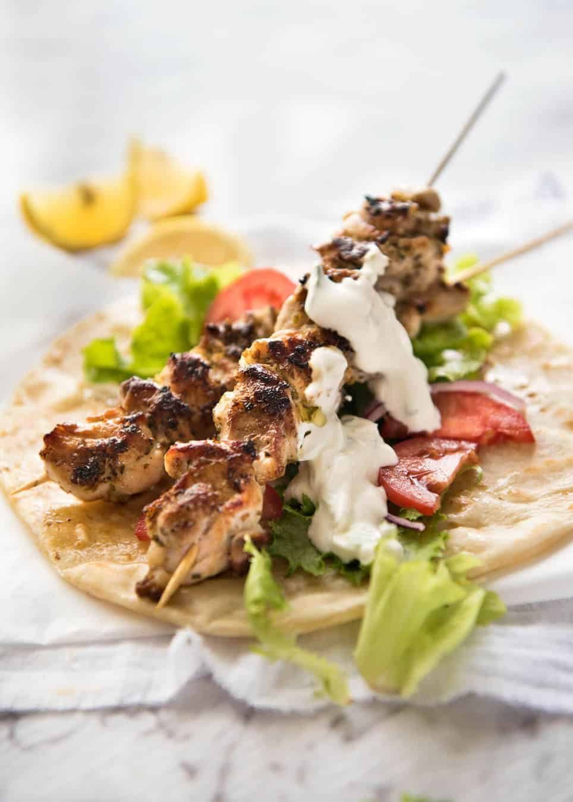
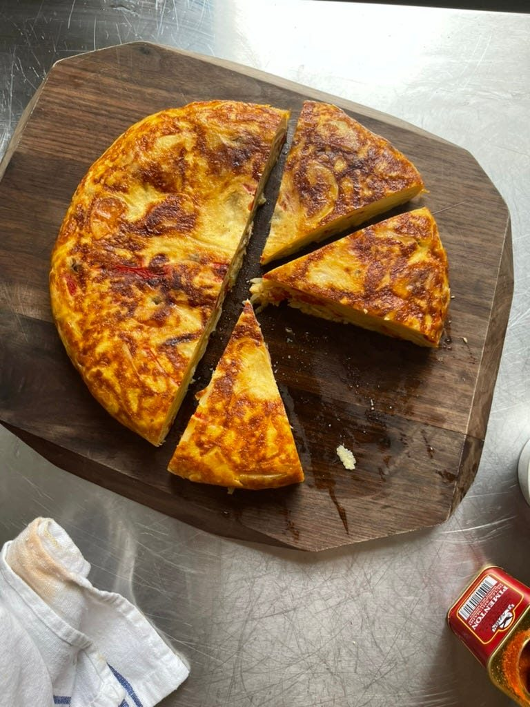

← French Bistro
Ratatouille
Provençal summer in a pot — each vegetable cooked to its own best self, then married.
Provençal summer in a pot — each vegetable cooked to its own best self, then married.
Real ratatouille — from Nice, ratatouille nicoise — is not a vegetable medley simmered into mush. It is a sequence: each vegetable sautéed separately so eggplant stays silky instead of spongy, zucchini keeps some spine, peppers get charred edges. Then everything meets in one pot with tomato, garlic, olive oil and herbs for a final, gentle union.
The movie gave the world the confit byaldi version — paper-thin mandolined rounds arranged in a spiral over sauce. Gorgeous, and a different dish in spirit. Make the rustic one first. It tastes more honest, it is faster, and the leftovers on toast with a fried egg might be the best breakfast in French cuisine.
serves 6 — tick items off as you shop; it saves as you go
In a wide pan, in olive oil, cook each vegetable in its own batch: eggplant until truly golden (7-8 min), zucchini until touched with color (5 min), peppers with charred edges (6 min). Salt each lightly. Set aside in a bowl. This is the whole secret; skipping it makes baby food.
Soften onions in the same pan 8 minutes. Add garlic, then tomatoes, thyme and bay. Simmer 15 minutes until it thickens into a rough sauce.
Return all vegetables to the pot. Fold gently — you are marrying, not mashing. Simmer uncovered 20 minutes on low, stirring occasionally. The dish should be glossy and stew-soft, each vegetable still identifiable.
Off heat, taste, adjust salt, add a thread of raw olive oil and torn parsley. Ratatouille improves as it sits — serve warm or at room temperature, never fridge-cold straight from the bowl.







Images are web-sourced via image search and self-hosted. Original sources:
https://z-cdn.chatglm.cn/image-search-mcp/images-ppt/518a205838e0.jpghttps://z-cdn.chatglm.cn/image-search-mcp/images-ppt/a711f8d37793.jpghttps://z-cdn.chatglm.cn/image-search-mcp/images-ppt/a81bc3d7b735.jpghttps://z-cdn.chatglm.cn/image-search-mcp/images-ppt/b31ab2c8865e.jpghttps://z-cdn.chatglm.cn/image-search-mcp/images-ppt/d31c21b073a6.jpghttps://z-cdn.chatglm.cn/image-search-mcp/images-ppt/e99d49ae5c94.jpghttps://z-cdn.chatglm.cn/image-search-mcp/images-ppt/fe3019b08996.jpgVerified working videos — click a card to load the embed.


Powered by GitHub Issues — the backup kitchen. One issue per recipe; your comment lands in the repo.

Lemon-oregano skewers, tzatziki with real garlic authority, and warm pita — Greece in fifteen minutes of grilling.

Three ingredients — egg, potato, olive oil — and the most argued-about technique in Spain.